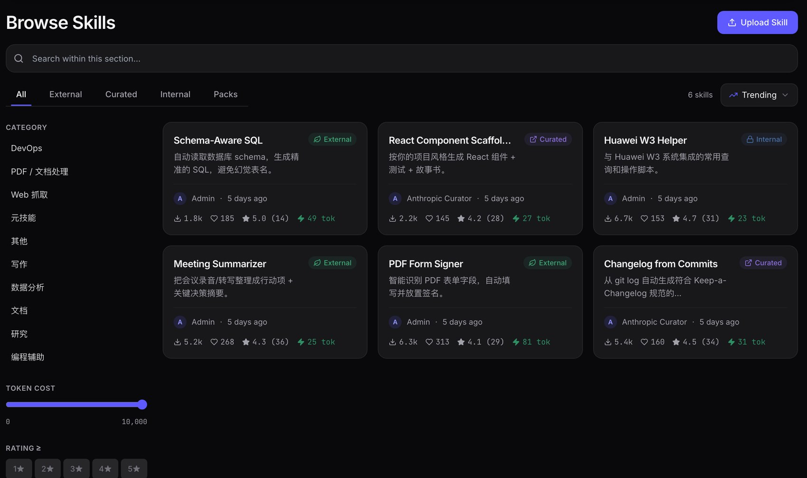
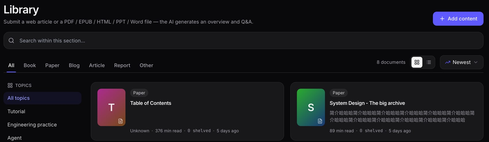
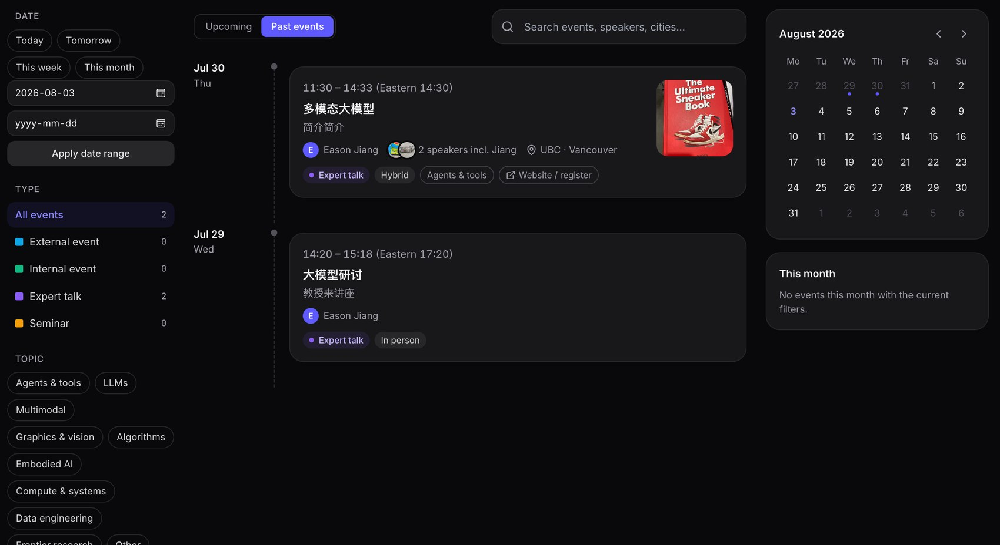

Overview
Internal models
Skills
Library · Geek Hub
Discussion · Events
CARI · AI Community
Two things, both already running
Twenty minutes. Stop me any time.
PART 1
Internal models
We host five models on the internal network. Any team can call them —
no proxy, nothing leaves the network.
· Which models are up, and what each is good for
· How to connect: endpoint, web UI, coding agents
· What a few teams have built with it already
· How to connect: endpoint, web UI, coding agents
· What a few teams have built with it already
≈ 8 minutes
PART 2
AI Community
A place to put the things we work out, so the next person can find them
instead of redoing them.
· Skills Center — agent skills you can install
· Library · Geek Hub — articles, papers, videos
· Discussion · Events — what people are trying, and what is on
· Library · Geek Hub — articles, papers, videos
· Discussion · Events — what people are trying, and what is on
≈ 10 minutes
CARI · AI Community
Overview
Internal models
Skills
Library · Geek Hub
Discussion · Events
CARI · Internal models
Five models on the internal network — open to every team
One OpenAI-compatible endpoint. If your tool takes a base URL and a key, it works.
What is deployed internal network, no proxy
| Name | Model | Use it for |
|---|---|---|
| GPT-OSS | openai/gpt-oss-120b | General chat and code. The default choice. |
| GLM-5.1 | zai-org/GLM-5.1-FP8 | Strongest of the local ones. Reasoning, longer tasks. |
| GLM-4.6V | zai-org/GLM-4.6V | Reads images. Screenshots, diagrams, scanned pages. |
| MiniMax M2.7 | MiniMaxAI/MiniMax-M2.7 | Long documents. |
| Gemma 4 | gemma-4-31B | Small and fast. Good for bulk jobs. |
The same gateway also reaches the external models — GPT-5.5, Gemini 3.1 Pro, Grok 4.20, Qwen3-Max —
with the corporate proxy already handled. Same call, different model name.
Three ways in
- From code. Base URL https://ai4news.rnd.huawei.com/model/v1, OpenAI SDK, done.
- From the browser. The multi-model chat on ai4news — pick several models, ask once, compare the answers.
- From a coding agent. Anything that accepts an OpenAI base URL: Claude Code, Cline, Continue, Cursor, aider.
Where the docs are
Wiki: <wiki link — fill in>
Getting a key: <how to request — fill in>
Agent setup examples: <link — fill in>
Getting a key: <how to request — fill in>
Agent setup examples: <link — fill in>
Usage is metered per person, with a daily token budget. Nobody has to share a key,
and nobody gets a surprise bill at the end of the month.
ai4news · multillm
Overview
Internal models
Skills
Library · Geek Hub
Discussion · Events
CARI · Internal models
What teams have done with it
Not demos. These are jobs people needed done anyway.
① Code refactoring team name
Screenshot goes here
Paste with the editor: click Enter edit, then Ctrl+V
or drag the image file onto this box
or drag the image file onto this box
Pointed a coding agent at the internal model and worked through an old codebase.
<one line on what changed — fill in>
② Model evaluation team name
Screenshot goes here
Evaluation runs, comparison table, whatever you have
Ran their own task set against several models to decide which one to build on.
<what they found — fill in>
③ Training / fine-tuning team name
Screenshot goes here
Training curve, config, sample output
Used the hosted models as a baseline while training their own.
<result — fill in>
Worth saying out loud: none of these teams asked anyone for a key, a quota or a deployment.
They pointed their tool at the endpoint and started.
ai4news · multillm
Overview
Internal models
Skills
Library · Geek Hub
Discussion · Events
CARI · AI Community
Skills Center — stop writing the same instructions twice
A skill is a folder you hand an agent: what to do, when to do it, which conventions to follow. Most of us have two or three that work well, sitting on one laptop.
Two of ours
Huawei SSO integration
W3 / UniPortal login. Django drop-in, an Auth.js provider for Next.js, or raw OAuth2 for
anything else. It also carries the subpath-behind-nginx traps that cost us about a week.
Huawei PPT style
Writes decks in the CARI internal report style — layout, colours, the red bar at the bottom.
These slides were made with it.
Once it is up there
- Public, Restricted or Private. Restricted = everyone sees what it is, you approve each download.
- Remix. Copy someone's skill, change it, publish as yours. The original is credited.
- You see who uses it. Downloads, distinct people, which version they are on.
- CLI install. skills install <name> · skills update
What is on a skill's page one line each
| Overview | What it does and when the agent should reach for it |
| Readme | The author's own notes |
| Files | Read every file in the package before you install it |
| Versions | History; you can install a specific version |
| Reviews | Ratings and comments from people who used it |
| Composition | What people tend to install alongside it |
| Comparison | The same task run with and without the skill |
| Playground | Talk to an assistant that already has it loaded, without installing |

AI Community · Skills Center
Overview
Internal models
Skills
Library · Geek Hub
Discussion · Events
CARI · AI Community
Library and Geek Hub — pool the good stuff
Everyone reads different things. Nobody sees the whole picture on their own.
Library — articles, papers, tutorials
AI moves fast and the good material is scattered — blogs, arXiv, newsletters, internal reports.
Each of us finds a few. If we all drop the good ones in one place, everyone ends up with a better
reading list than they would put together alone.

How it works
- Paste a link or upload a PDF — AI writes a chapter-by-chapter summary.
- Highlight and annotate. Private by default, or share so colleagues can reply.
- Add it to your shelf — it remembers where you stopped.
Geek Hub — talks and videos
Same idea for video. Our own sessions, plus the good external talks and summaries people find.
A link in a chat is gone in a day; here it stays, with the discussion under it.
Geek Hub screenshot goes here
The library has content already; Geek Hub is still filling up.
Paste a screenshot once there are a few videos in.
Paste a screenshot once there are a few videos in.
AI on top of the video
- A summary per video — one line plus the key points, so you can tell in half a minute whether the hour is worth it.
- Ask questions about that video. Answers come from that talk only; if it was not covered, it says so.
AI Community · Library · Geek Hub
Overview
Internal models
Skills
Library · Geek Hub
Discussion · Events
CARI · AI Community
Discussion and Events
One place to talk about what people are trying, and one place to find out what is actually on.
Discussion — two halves
Feed
Short posts, closer to a moments feed. Something you tried this afternoon, a screenshot,
a link, an AI event worth flagging. Images, video and files all work. People react and comment.
Topics
Longer threads. A new model release and whether it is worth switching to. Someone's paper
in progress and what the reviewers will say. Filed by board, so it is still there in six months.
Events — the problem it fixes
We put real effort into getting a professor or an expert to come and speak. Then it goes out in
one mailing list and a couple of group chats.
People in another lab often never hear about it. Sometimes people in the same lab don't either. The talk happens, and half the people who would have wanted it were never told.
People in another lab often never hear about it. Sometimes people in the same lab don't either. The talk happens, and half the people who would have wanted it were never told.
BEFORE
Talk on Thursday — Prof. X
to: lab-list@… · Tue 09:41
Hi all, we have a guest speaker on Thursday at 3pm, meeting room …
Only reaches one list. No time zone. Nothing to search later.
NOW

What changes
- Everyone can see it, not only the list it was sent to. Cross-lab and cross-institute both work.
- Filter by what you care about — date, topic, city, online or in person.
- Times show in your own zone. The event's own time is in brackets next to it.
- Past events stay. You can go back and see who spoke on what.
AI Community · Discussion · Events
Overview
Internal models
Skills
Library · Geek Hub
Discussion · Events
CARI · AI Community
What we would like back from you
All of this is built. Whether it is worth maintaining depends on how many teams actually use it.
Try one thing this week
Point an agent at the internal model, install one skill, or put the next paper you have to read into the Library.
Tell us what is missing
Which model you need and cannot get. What broke. What you went looking for and did not find.
Bring your team's work
A skill worth sharing, a model endpoint you want reachable, a talk worth recording. We will help with the wiring.
What actually happens when you tell us something
| You say | What we do |
|---|---|
| "We need model X" | We deploy it internally or enable it on the gateway. It is a config change, so it is days, not a project. |
| "This is broken / missing" | It goes on the list with your name against it. Small things get fixed in the same week. |
| "My team already built this" | We help you publish it so the other teams stop building it again. |
AI Community
Thank you.
Questions — or come find me afterwards and I will get you set up.
ai4news.rnd.huawei.com · AI Community
Copyright©2018 HUAWEI TECHNOLOGIES CO., LTD. All Rights Reserved.
The information in this document may contain predictive statements including, without limitation, statements regarding the future financial and operating results, future product portfolio, new technology, etc. There are a number of factors that could cause actual results and developments to differ materially from those expressed or implied in the predictive statements. Therefore, such information is provided for reference purpose only and constitutes neither an offer nor an acceptance. Huawei may change the information at any time without notice.
The information in this document may contain predictive statements including, without limitation, statements regarding the future financial and operating results, future product portfolio, new technology, etc. There are a number of factors that could cause actual results and developments to differ materially from those expressed or implied in the predictive statements. Therefore, such information is provided for reference purpose only and constitutes neither an offer nor an acceptance. Huawei may change the information at any time without notice.